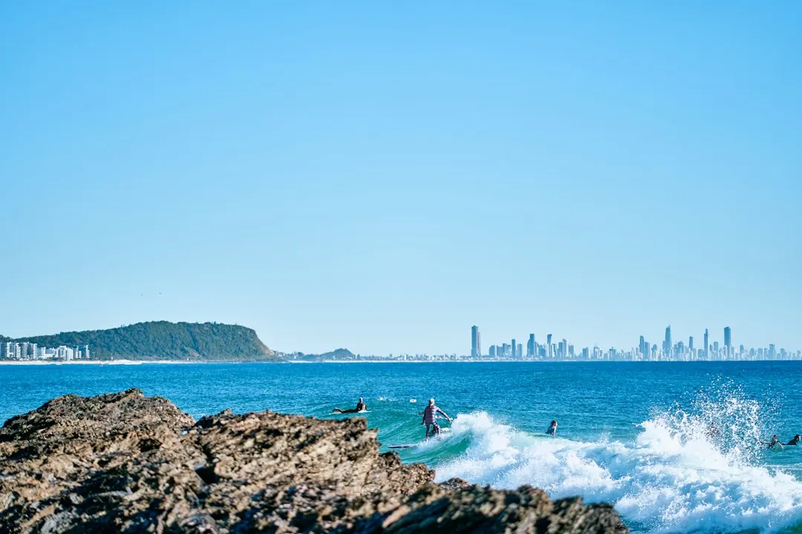

For Gold Coast concrete pool work over $3,300, the published guidance says to use a QBCC licensed contractor, a written signed contract and Queensland Home Warranty Scheme cover. A building certifier approves the pool and barrier before construction, with a barrier inspection before the pool is filled to 300 mm. Cost depends on access, excavation, slope, soil, steel, finish, equipment, retaining and engineering rather than one standard figure.
For homeowners comparing concrete plunge pools gold coast options, the practical decision comes down to block conditions, pool purpose, approvals, finishes and how clearly each quote describes the work.
Concrete Plunge Pools Gold Coast Explained
The published information from Concrete Pools Gold Coast frames the first decision around the yard, not a generic pool catalogue. Decide whether the project is a family pool, a compact plunge pool, a lap pool or a renovation of an existing concrete pool. Then record where the pool would sit, how machinery could reach it and whether the design needs to fit a narrow side setback.
Concrete is built in place, so the shape can respond to the yard. A plunge pool can suit a small backyard, townhouse block or tight side access, while a lap pool uses a long, narrow section for swimming. Renovation work may involve resurfacing, tiling, coping, leak repair or equipment upgrades rather than a new excavation.
- Sketch the preferred position and access route.
- Choose the pool type before comparing detailed quotes.
- Note whether the project is new construction or renovation.
Read the site signals before comparing prices
Excavation, access, steel, the interior finish and equipment can all change the price. A quote that looks cheaper may simply leave out work required by the block or selected finish, so compare the scope line by line rather than relying on the total.
Gold Coast sites raise different questions. A sloping block around Tallai or Reedy Creek may require retaining and extra engineering. Sandy coastal ground around Burleigh Waters may need structural design suited to the soil. Tight access in older suburbs can slow excavation.
Ask each contractor to identify the assumptions behind excavation, soil conditions, access, retaining, engineering, equipment and the chosen interior finish. If a quote does not state whether a task is included, request clarification before comparing offers.
Approvals and contract checks
The Queensland process described in the guide includes building approval from a certifier, engineering specifications and a compliant safety barrier. The certifier approves the pool and barrier before work starts, then inspects the barrier before the pool is filled to 300 mm.
For pool work over $3,300, the guidance says the contractor should be QBCC licensed, the contract should be written and signed, and Queensland Home Warranty Scheme cover should apply. Ask who is responsible for certification, what engineering documents are included and how the barrier inspection is handled.
The contract should make the scope readable. Look for pool dimensions, excavation assumptions, access conditions, structural work, finishes, equipment, retaining, engineering, certification and barrier requirements. An itemised version makes omissions easier to identify.
Concrete, fibreglass and renovation choices
The published guide does not give one city-wide answer on whether concrete is cheaper than fibreglass. It says the block matters more than the postcode, with local conditions such as slopes and sandy coastal soils shaping the engineering. A like-for-like comparison is more useful than a general material claim.
For a new concrete pool, compare the proposed shape, depth, access method, excavation, structural work, interior finish and equipment. For an existing pool, first establish whether resurfacing, tiling, coping, leak repair or equipment upgrades address the brief. A renovation quote should explain the condition being treated and the work included.
Use the same written project description for each quote. Include the suburb, pool type, approximate location, access constraints, preferred finish and whether the property is a new build or an existing pool site.
A practical enquiry path for Gold Coast homeowners
The listed service areas include Robina, Burleigh Waters, Mudgeeraba, Helensvale, Pimpama, Coomera, Varsity Lakes, Carrara, Benowa, Ashmore, Parkwood, Arundel, Currumbin Waters, Tallai and Reedy Creek. The useful distinction is what the property requires: flat access, a slope, sandy ground, a narrow yard or an existing pool project.
Before requesting a quote, prepare the property area, preferred pool type, approximate location and timing. Plans and measurements are optional for the enquiry, but a clear description of access may help explain the site. The guide says a licensed and insured local contractor can follow up after an enquiry, so confirm licensing, insurance, approvals and the written scope during that conversation.
For a separate look at shaped and tailored pool layouts, see the custom pool design guide for Gold Coast yards. Keep the next step focused on site conditions, approvals and an itemised quote.
- Define the project. Choose a family, plunge, lap or renovation brief and mark the proposed position.
- Inspect the site questions. Record access, slope, soil clues, retaining needs and any existing pool conditions.
- Check the approval path. Confirm certifier approval, engineering specifications, barrier requirements and contract arrangements.
- Compare written scopes. Ask for itemised quotes covering the same excavation, finish, equipment and site assumptions.
- Request the enquiry. Provide the suburb, pool type and preferred timing so the project can be discussed accurately.
| Starting point | Questions to answer | Quote information to request |
|---|---|---|
| New concrete pool | Is the yard suited to a family, plunge or lap layout? | Access, excavation, steel, engineering, finish, equipment and barrier scope |
| Existing concrete pool | Would resurfacing, tiling, coping, leak repair or equipment upgrades meet the brief? | Condition being treated, repair method, finish, equipment and certification requirements |
Common questions
What drives the cost of a concrete pool on the Gold Coast? The guide identifies excavation, access, steel, interior finish and equipment as cost factors. Slope, soil, retaining, engineering and the pool design can also change the scope, so compare itemised quotes rather than one total.
Can a concrete pool suit sandy ground near the Gold Coast beaches? The published guidance says sandy coastal ground may need structural design suited to the soil. Ask how the proposed engineering and construction method address the actual site.
What approvals are mentioned for a new pool? The guide refers to building approval from a certifier, engineering specifications and a compliant safety barrier. The certifier approves the pool and barrier before work starts and inspects the barrier before the pool is filled to 300 mm.
What should a pool quote include? Ask whether it covers access, excavation, steel, retaining, engineering, certification, the safety barrier, interior finish, equipment and any home warranty requirements. Request clarification where an item is not expressly included.
Is renovating an existing pool a separate option? Yes. The listed renovation work includes resurfacing, tiling, coping, leak repair and equipment upgrades. The right scope depends on the condition of the existing pool and the outcome required.
This guide covers concrete pool types, Gold Coast site factors, quote comparisons, Queensland approvals and renovation questions.